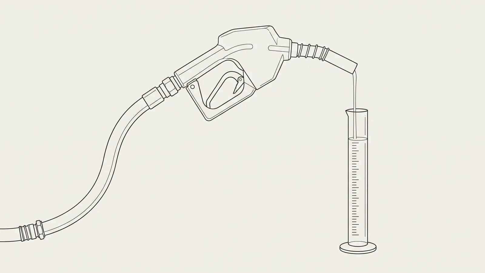

El back-office del transporte, explicado renglón por renglón.
Liquidación de viajes, CFDI, IEPS de diésel, peajes y Carta Porte — de operador a operador. Cada cifra trae su fuente; cuando no hay fuente, no hay cifra.

Nadie mide lo que cuesta liquidar un viaje a mano. Nosotros lo medimos.
El costo de la liquidación de viajes no vive en ninguna cuenta contable: está repartido entre tráfico, liquidaciones, facturación y contabilidad. Nuestro censo lo pone en unos $105 por viaje, en una banda de $94 a $115.
Leer artículo
El estímulo del IEPS no se pierde en el cálculo. Se pierde en el CFDI de la gasolinera.
El monto acreditable no está escrito en ningún renglón del comprobante: son litros por la cuota vigente el día de la carga. Qué campos del CFDI sostienen el estímulo de la LIF art. 20-A, y cuáles lo tumban desde la bomba.
Leer artículo
El 50% del peaje se acredita contra el ISR. Primero hay que probar que ese cruce fue tuyo.
El 50% sale de una multiplicación. Lo caro es lo otro: el estado de cuenta del TAG llega consolidado por mes y no dice a qué viaje pertenece cada cruce. La regla 9.1.8 pide que la bitácora y ese estado de cuenta coincidan.
Leer artículo
La Carta Porte no se revisa cuando se emite. Se revisa cuando ya no se puede corregir.
Casi todos los errores del complemento pasan el timbrado sin hacer ruido: el PAC valida aritmética y catálogos, no si el viaje ocurrió como dice el papel. Qué contrastar en la liquidación, mientras corregir todavía es barato.
Leer artículo
Tu proveedor puede cancelar la factura del diésel después de que ya la dedujiste.
Sobre cada comprobante que ya diste por cerrado corren dos relojes: el plazo de cancelación de CFDI que rige en 2026 y los treinta días del artículo 69-B. Ninguno de los dos toca la puerta.
Leer artículo
Qué puede y qué no puede hacer un agente de IA en el back office de una flota
El modelo lee y ordena; el motor calcula. Dónde va cada uno, qué partes del ciclo siguen necesitando manos humanas, y las cinco preguntas con las que se evalúa a cualquier proveedor — Likida incluido.
Leer artículo